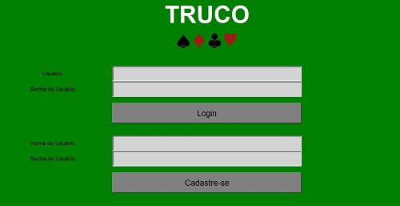

Co-Design 2016
Projeto Destaque
Sobre o Projeto
Fotos
O Projeto Destaque foi a plataforma de Instrução de Truco desenvolvida na
disciplina de Design de Software do primeiro semestre de Engenharia no Insper.
Ela conta com dois "players": O Instrutor e o Aluno.
A ideia de ter dois "players" vem para otimizar a experiência do usuário visto que a sequência de cartas não é tão intuitiva.
Especificações do Projeto
O Projeto foi desenvolvido com os recursos da Linguagem Python
num período de 2 meses.
Coube aos alunos envolvidos no projeto toda a organização de tempo e divisão de tarefas para que o trabalho saísse como desejado.
